安全基本方針
基本方針
当社は、人命尊重の崇高なる理念に基づき、労働安全衛生に関する法令並びに自社の労働安全衛生管理規定を遵守し、全従業員が参画して、快適な職場環境のもと健康で安全な企業の確立を目指す。
行動方針
- 災害防止の取り組みを経営の重要課題として位置づける。
- 三現主義（現場へ行って・現物を観て・現実を考える）を、普遍的な価値判断の基準とし、総力を結集して労働災害の撲滅を図る。
- リスクアセスメントに基づき、労働安全衛生目標を設定し、安全衛生の継続的な改善に全従業員で取り組み、負傷・疾病の防止に努める。
- 事業活動に関わる労働安全衛生リスクを低減すべく、特に次のリスクの低減を目指します。
- 重篤・重大災害ゼロ
- 輸送中・作業中の交通災害ゼロ
- クレーン等重機による労働災害ゼロ
- 墜落・転落災害ゼロ
- 第三者災害ゼロ
- 労働安全衛生教育訓練を充実させ、全従業員及び協力業者に本方針並びに重点管理事項を周知し理解させ、維持することに努める。
今井重機建設株式会社 代表取締役社長 米澤 茂與
本社 ／ 小杉営業所 ／ 栃木営業所
／ 小杉営業所 ／ 栃木営業所
本社 ／ 小杉営業所 ／ 栃木営業所
令和8年度 運輸安全マネジメントの取り組みについて
輸送の安全に関する基本的な方針（2026年度）
- ・輸送の安全確保は我社の根幹
- ・安全に関して継続的改善を行い、環境に配慮し無事故社会を実現する
- 輸送の安全性向上を最重要課題と位置づけ全社員で事故削減に努める。
社内への周知方法
- ・「安全方針」を全従業員に配布し 社内及び営業所等に掲示する。
- ・朝礼時、点呼の際に唱和することを習慣化する。
輸送の安全方針に基づく具体的な目標
- 輸送車両事故発生件数に対し50％以上削減する。
- それ以外の人身事故 ”０”を目指す。
- 積荷事故 ”０”を目指す。
- ｴｺﾄﾞﾗｲﾌﾞを実践する、腰痛予防体操を日課に取り入れる。
- 車両の日常点検を確実に実施する。
目標達成のための具体的な計画
- 運行管理体制の充実強化：個々の乗務員の拘束時間・運転時間・連続運転時間・
- 休憩時間・休息時間等を把握し過労運転の防止を図る。
- ・等速運転の実施：一般道 ６０km/h 高速道８０km/hを厳守する。
- ・デジタル式運行記録計（デジタコ）の有効活用：チャート紙の管理・指導
- 安全対策会議の実施：年間4回 事故事例報告、危険予知トレーニング他
- ヒヤリハットの情報を活用。
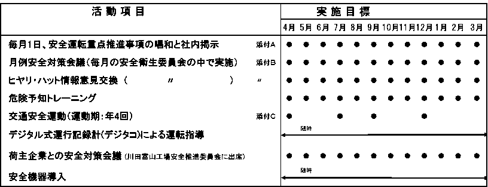
社内における安全に関する情報交換方法
- 従業員とのコミュニケーションの充実により、ヒヤリハット体験を収集する。
- 朝礼、点呼時、毎月の安全衛生委員会の中で意見交換を行い、各種情報等 水平展開を行う。
社内における安全上の問題点反省事項
- 安全運行に関するドライバーの意識が不十分。
- どんな小さな不具合でも重大事故の前触れとして捉え、拡大する前に撲滅する。
- 連鎖を断ち切る。
問題点に対する改善方法
- 把握した問題点を社内掲示し、ミーティング時及び点呼時に注意喚起する。
運輸安全に関する目標達成状況 (2025年度)
- 輸送車両事故発生件数に対し50％以上削減する。 達成
- それ以外の人身事故 ”０”を目指す。 達成
- 積荷事故 ”０”を目指す。 未達成
- ｴｺﾄﾞﾗｲﾌﾞを実践する、腰痛予防体操を日課に取り入れる。
- 車両の日常点検を確実に実施する。 運行不可０件 (０件)
「自動車事故報告規則第二条」に規定する事故に関する情報・・・・０件
今井重機建設株式会社本社 代表取締役社長 米澤 茂與
小杉営業所 代表取締役社長 米澤 茂與
今井重機建設安全大会開催
【米澤社長挨拶】
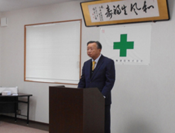
あけましておめでとうございます。
今年も心新たに、安全確保に努め、全社員が一丸となって、無事故・無災害を誓いましょう。
まずは、それぞれで「安全目標」を立て全員で共有してください。
今年も大雪による立往生が予測されます。事前に天気予報等で確認し巻き込まれないよう対策を講じてください。健康面では、風邪薬等の服用時に、眠くなる成分等が含まれていないかを確認し周知しての服用をお願いします。皆さんが健康で明るい1年となりますよう、安全文化として構築していきましょう。
【安全表彰】
永年勤続30年,20年表彰並びに、優良従業員表彰、優良無事故運転者表彰、 労働災害防止優良従業員表彰、社内ヒヤリハット年間最優秀賞授与を行いました。
米澤社長から、永年勤続30年表彰を受けられる寺島勝さん、河合克之さん。
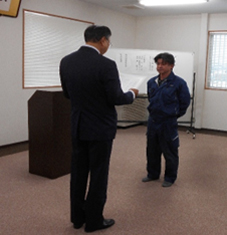
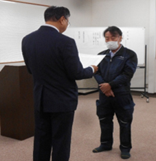
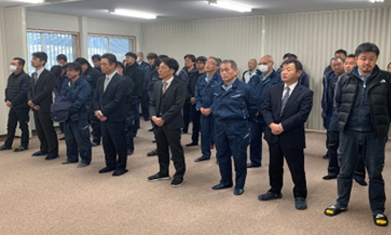
寺島勝さん 河合克之さん
階層別教育①
社内研修 階層別教育（本社工事部・クレーン部・輸送部）
令和６年８月１３日 今井重機建設（株）本社研修室
工事担当者 能力向上教育 わかりやすい災害資料（令和５年度） 日本橋梁建設協会
・鋼橋架設現場で発生した災害事例
・災害統計 災害発生状況 災害事例研究結果
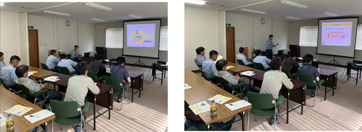
社内研修 階層別教育（本社輸送部）
令和６年１１月８日 今井重機建設（株）本社研修室
・トラック荷台での積荷の安全・適切な固定・固縛 陸上貨物運送事業労働災害防止協会
チェーンレバーホイストとベルトラッシングの基本的な取扱い方法
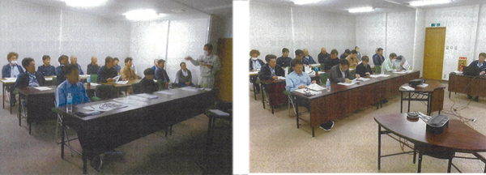
・陸運業の仕事とは
・荷台での積荷の安全・適切な固定・固縛
ﾚﾊﾞｰﾌﾞﾛｯｸの基本的な使用方法と注意事項、手入れと保管
ﾚﾊﾞｰﾌﾞﾛｯｸを使用した災害事例
・ヒューマンエラー防止教育
ヒューマンエラーと不安全行動とは、 ・ヒューマンエラーを防止する
一人ＫＹの実践、指差呼称による安全確認の励行
社内研修 階層別教育（本社輸送部）
令和６年１２月５日 今井重機建設（株）本社研修室
荷役作業中でのトラック荷台からの墜落・転落災害防止教育
・「荷役作業での労働災害を防止しましょう！」 厚生労働省・労働局・労働基準監督署 編集
「陸上貨物運送事業における荷役災害の安全対策ガイドライン」を積極的に推進する。
・「陸上貨物運送事業におけるトラック荷台からの転落を防ぐために」 厚生労働省・労働局・労働基準監督署 編集
（荷台昇降設備・装備はありますか？） 荷台への昇降時の転落が ４０％
・陸上貨物運送事業における「重大な労働災害を防ぐためには！」 厚生労働省・労働局・労働基準監督署 編集
・「ＤＶＤ観賞」 荷役作業における労災防止対策（荷役作業の５大災害)
・ トラック積卸し作業指揮者不在で書類送検、安衛則改正も
「陸上貨物運送事業におけるトラック荷台からの「転落防止を考える」
災害状況,原因と再発防止策を見直し、荷役作業中の「墜落・転落」安全の対策基本事項を確実に守る職場を構築する
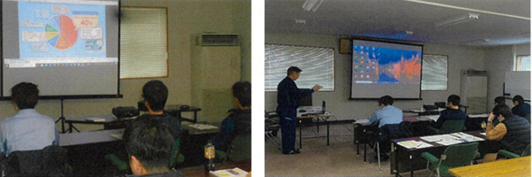
社内研修 階層別教育（本社輸送部・工事部・クレー部）
令和７年１月６日 今井重機建設（株）本社研修室
労働災害防止について ～安全管理水準を向上させるためには～
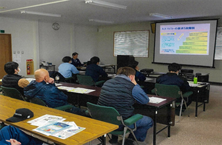
・新人に労働災害が多い理由
・職場内教育：ＯＪＴ
・ヒューマンエラーを引き起こす１２の要因
・危険をどのように見つけるか？
Kanizsaの三角形、ｴﾋﾞﾝｸﾞﾊｳｽ忘却曲線
・「ひと声かけあい運動」
・ゆでカエル…ってなに
・各自がバラバラだと（ﾍﾞｸﾄﾙを合わせる）
方向性を揃え全員で実施（ﾍﾞｸﾄﾙの総和は大）
・「組織風土」⇒安全文化の構築
階層別教育②
社内研修 階層別教育（本社輸送部、工事部、ｸﾚｰﾝ部）
令和６年４月２５日 今井重機建設（株）本社研修室
・熱中症予防を真剣に取り組みましょう
今夏も記録的な高温となる恐れあり
ＳＴＯＰ！熱中症 ”４月から防止対策準備”
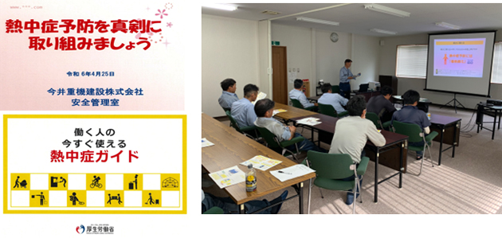
社内研修 移動式クレーン運転員登録
令和６年２月１０日・１９日 今井重機建設（株）本社研修室
鹿島北陸支店教育資料に基づく、移動式クレーン登録運転員安全教育。
（今井重機建設 移動式クレーン登録運転者 受講者数 ：９名） ２回に分け実施
・新ブルドン抹消検査試験
・移動式クレーン安全教育
（安全装置について、鹿島ルールの確認、過去に発生した事故事例、まとめ）
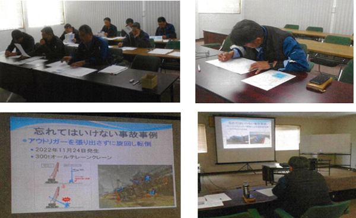
安全教育 初任運転者に対する特別な教育(輸送部）
特定の運転者（初任運転者）に対する特別な指導指針に基づく教育
・一般的な指導及び監督内容 １２項目
・上記内容を座学および実車を用いた実習
令和５年９月４日～１３日 今井重機建設（株）本社研修室
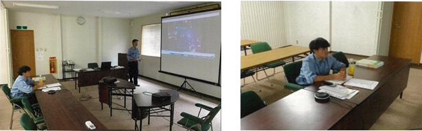
令和６年９月２日～１２日 今井重機建設（株）本社研修室
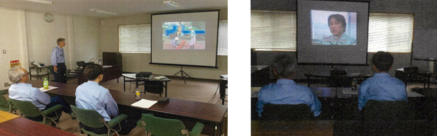
令和６年１０月１日～８日 今井重機建設（株）本社研修室
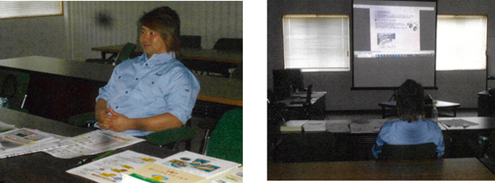
安全教育 フルハーネス型安全帯使用作業特別教育
(安衛則の一部改正により、平成31年2月1日から施工)
令和６年４月１０日 今井重機建設（株）本社研修室
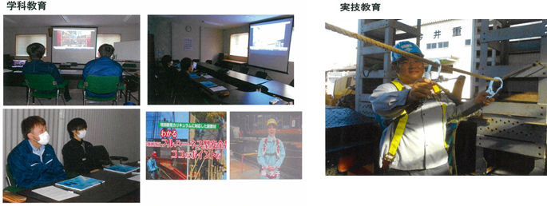
令和７年４月２日 今井重機建設（株）本社研修室
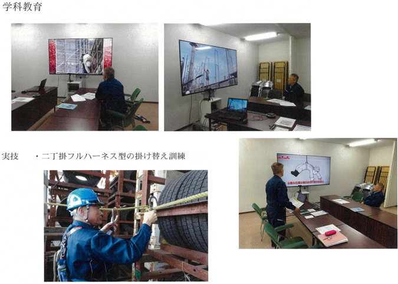
外部研修 今井重機建設保有機械紹介
令和６年５月１日 今井重機建設（株）本社倉庫・駐車場
川田建設株式会社北陸支店 社員研修
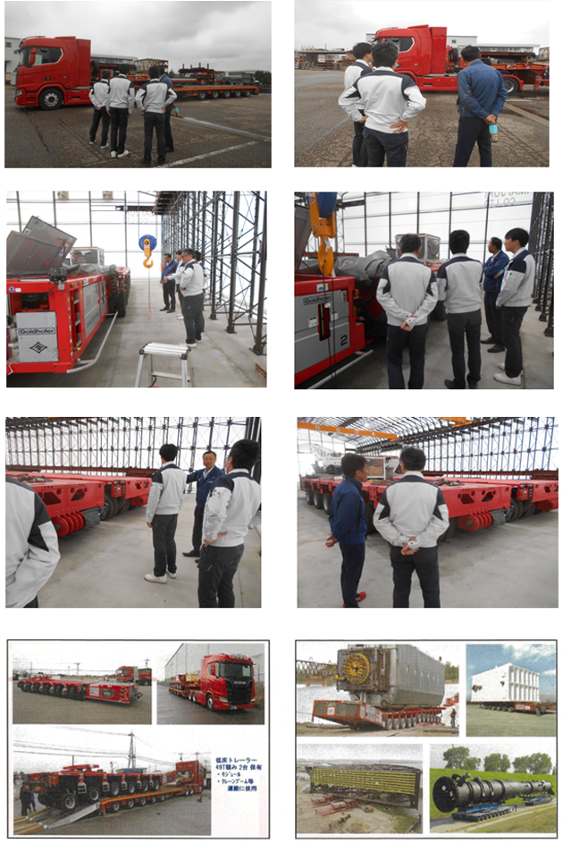
階層別教育③
社内研修 特別教育 本社工事部・クレーン部
令和４年３月１９日 今井重機建設（株）本社研修室
・自由研削といしの取替え又は取替え時の試運転の業務に係る特別教育
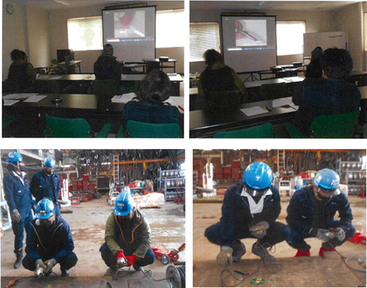
社内研修 特別教育 本社工事部・協力業者
令和４年７月１６日、１７日 今井重機建設（株）本社研修室
・巻上げ機（ウインチ）の運転業務
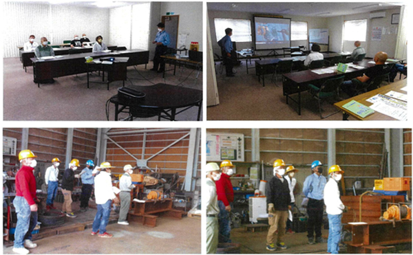
外部講師による安全研修会
社内研修 本社・小杉営業所 全員
令和５年１２月５日 今井重機建設（株）本社研修室
【安全講話】
・こどもミュージアム プロジェクト やさしいきもちが みらいをつくる
このトラックを運転する父ちゃん 頑張らずにいられない
講師：川田工業株式会社常務取締役
安全品質環境本部長 松崎 宏之氏
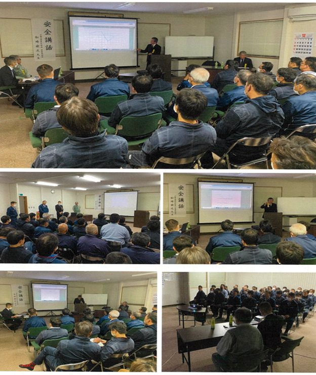
川田工業の安全に対する取り組み事例
これまで なぜなぜ分析・ヒヤリハット
これから 子供ミュージアム
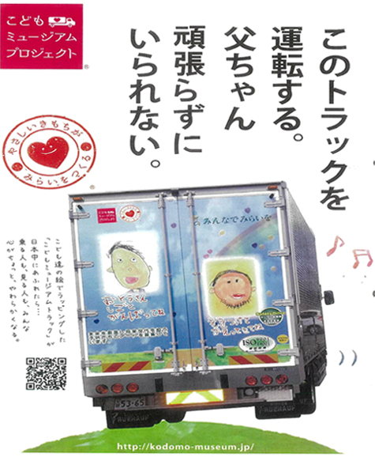
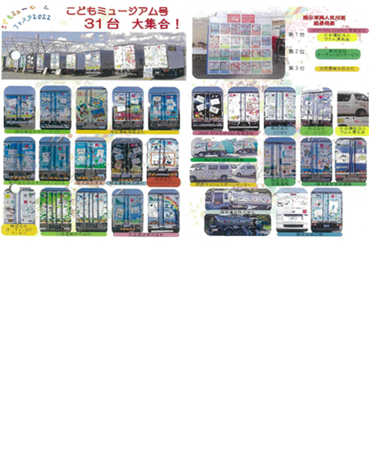
社内研修 クレーン部・工事部
令和５年１２月２８日 今井重機建設（株）本社研修室
【移動式クレーンのメンテナンス】
・タダノ認証エンジンオイル シェル リムラ Ｒ５
・今井重機建設株式会社向け メンテナンス紹介
講師：株式会社タダノ 北陸支店
主任 堀田 和彦氏 サービスグループ 大野将志氏
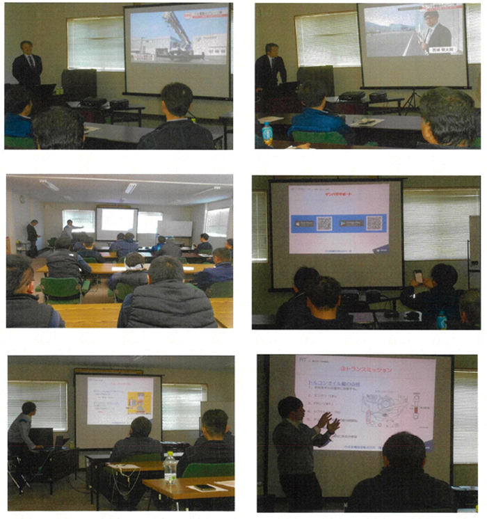
１，タダノ認証エンジンオイル
シェル リムラ Ｒ５ ＬＥ 10W-30 15W-40(CK-4)
・製品性能と特徴
・用途
・取り扱い上の注意点
２，メンテナンス紹介 日常点検・整備
・ラフテレーンクレーン
運行前の日常点検
重点的に点検整備
・カーゴクレーン
現場で”困った”を解決
社内研修 輸送部・クレーン部・工事部
令和５年１２月２８日 今井重機建設（株）本社研修室
【トレーラー車輪脱落事故防止対策教育】
講師：富山日野自動車株式会社
砺波営業所 販売チーム主任 松代 英樹氏
営業第一部 呉西担当 石灰 将己氏
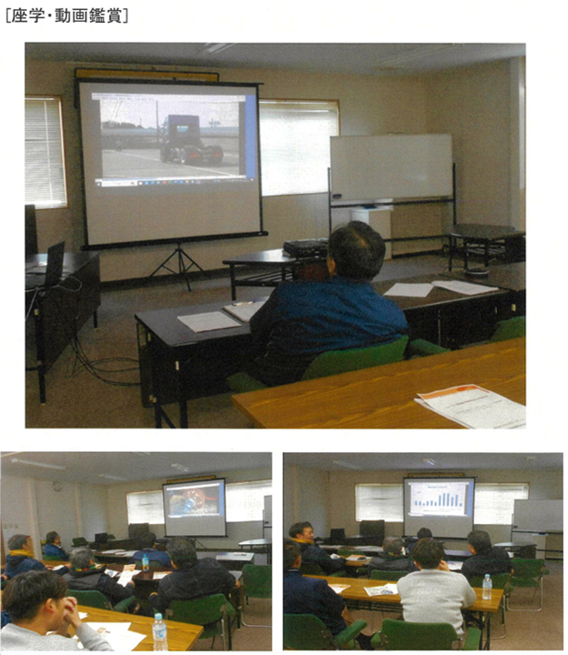
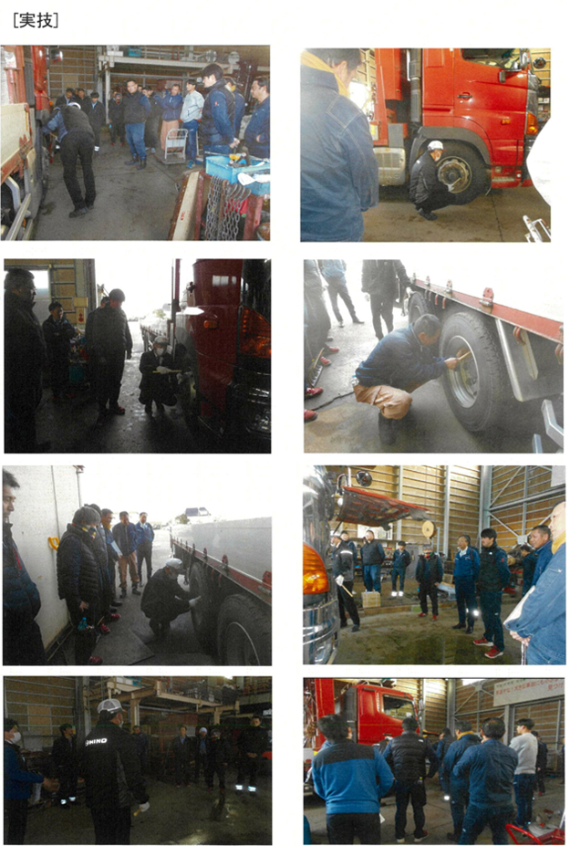
社内研修 本社・小杉営業所 全員
令和６年１月５日 今井重機建設（株）本社研修室
１，「保険が使える」にご用心！ あなたの保険金が狙われています！
講師：有限会社 いざわ保険
専務取締役 井澤 伸生氏、 井澤 照生氏
２，対話形式でわかる！ 交通事故における 企業・ドライバーの責任
講師：ARICEホールディングスグループ
株式会社 A.I.P 高岡支店 支店長 向井 英隆氏
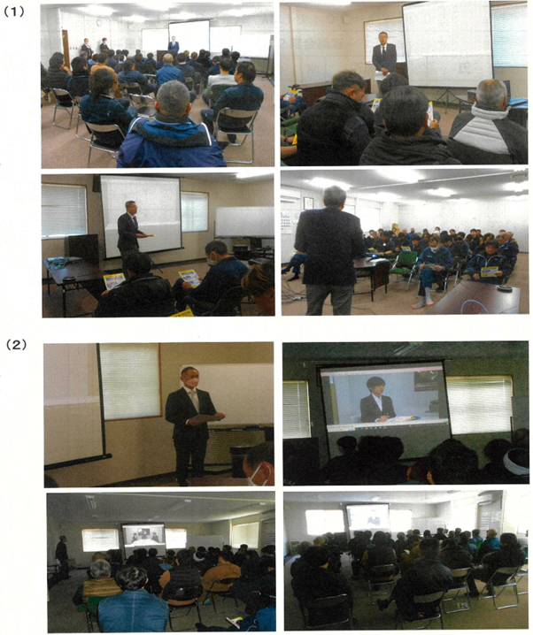